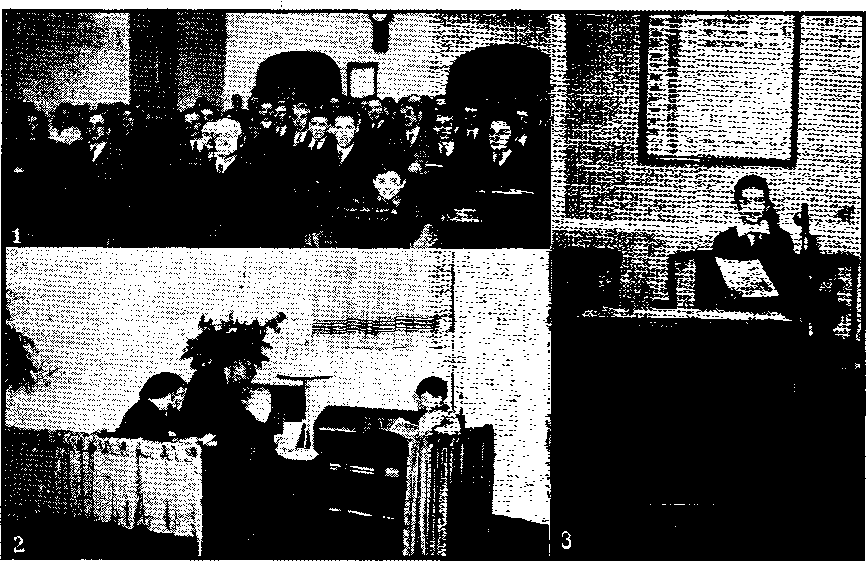

Catholicism of the East and West
.Expansion of Greek Church to Russia
Russian Revolution Against Church
Modern Reconciliation Possible!
*Bishop Laud Offered Thanks to His God
<Ten Million Species of Insects •
Aptera, or Apterygota; Orthoptera
Mormon Crickets and Other Grasshoppers
Locust Eggs, Larvae, Pupae, and Adults
A Locust Storm in South Africa
“Thy Word Is Truth” Earth’s First Dominion
Theocratic Ministry Course in Tacoma
The Jews and the Palestine Mandate
“Catholic Principles of Politics”
Published every other Wednesday by WATCHTOWER BIBLE AND TRACT SOCIETY, INC.
117 Adama St., Brooklyn 1, N. T.. U. B. A.
OFFICERS
Preeident N. H. Knorr
Secretary W. E. Van Amburgh
Editor Clayton J. Woodworth
. Five Cents a Copy
51 a year In the United States 51.25 to Canada and aU other countries
NOTICE TO SUBSCRIBERS
Remittances: For your Own safety, remit by postal or express money order. When coin or currency is Jost fn the ordinary mails, there Is no redress. Remittances from countries other than those named below may be made to the Brooklyn office, but only by International portal money order.
Receipt of a new or renewal subscription will be ae-knowledged only when requested. Notice of Expiration is sent with the Journal one month before subscription .expire*. Please renew promptly to avoid loss of copies. Send change of address direct to us rather than to the post office. Tour request should reach us at least two weeks before the date of issue with which it is to take effect. Send your old as well as the new address. Copies will not be forwarded by the post office to your new address unless extra postage is provided by you.
Published also in Greek, Portuguese. Spanish, and Ukrainian.
OFFICES FOR OTHER COUNTRIES
England 34 Craven Terrace, London, W. 2
Australia 2 Homebush Rd., Strathfleld, N. S. W. South Africa 533 Boston House, Cape Town
Mexico Calzada Melebor Ocampo 71, Mexico, D. F. Brazil Rua Llctnio Cardoso 330, Rio de Janeiro
Argentina Calle Honduras 5646-48. Buenos Aires Entered as second -class matter at Brooklyn, N. Y., under the Act of March 1, 1879
In Brief
From a Witness in Britain
♦ We had just finished a study with an old lady when her daughter-inlaw came in. She began speaking of conditions in general, so Ethel told her that man could not bring peace and life, and that it is Jehovah's purpose to destroy this wicked world and set up a righteous new ’frorld under Christ Jesus.
She then asked us where we got our authority to pfeach; so Ethel pointed her to the Scriptures, andz how they speak of things now taking place.
The lady then told us that she was a Catholic, and 1 asked her if she would read one of our booklets if I gave her one. She said she would, but she would like us to call and see her. We promised we would do so, and allowed her a fortnight to read the booklet. When we went ‘ she was delighted to see us, and, although she was just going somewhere important, she said she would put it off. She then told us that she had been brought up in a convent school and that when she grew up she married a Protestant. For thirty years the Catholic church has cast her off, and told her that she was living in sin. They forbade her to go to confession or mass, and would not let her children be baptized. When she was young, she informed us, she did not trouble, but now that she is getting older she would like to get right with God.
She had begun to wonder if she ought to be married in the Catholic church, One Sunday, when coming out of church, she started to go to a priest, when she felt an urge to wait. She then went home and asked the Almighty God to guide her and show her what she ought to do. A fortnight after that she met us, and has believed that we were sent in answer to her prayer. Now she has a Bible, and book studies in her home attended by her daughter, daughter-in-law and granddaughter. ,
“And in His name shall the nations hope.”—Matthew 12:21, A.V.
Volume XXVI Brooklyn, N. Y., Wednesday, August 15, 1945 Number 676
Catholicism of the East and West
DURING the fourth century after
Christ the emperor Constantine moved the capital of the Roman empire from Rome to Constantinople. Later, A.D. 395, the partition of the Roman world between Honorius and Arcadius, the -conquest of the West by the barbarians and its final severance from the East resulted in the rise of the papacy with its ascendancy over half of the world and claimed jurisdiction over the whole. On the other hand, the foundation of Constantinople, the dismemberment of the empire, and the complete separation, in a political sense, of the East from the West, exalted the pride of the patriarch and raised his see to an equality with that of the pope. He as indignantly resented the pope’s pretensions to supremacy as they were vehemently, asserted.
The persistent pretensions of Rome, the constant antagonism, the frequent conflicts to which they gave rise, were accompanied by differences of dogma and of discipline. These latter included the celebration of Easter, the single or double nature of Christ, idol-worship, and the question as to whether the holy spirit proceeds from both God and Christ. These served to embitter the struggle, to render the contest more implacable, and to make reconciliation or harmony impossible.
However, an apparent unity was restored with the seventh general council, which convened in the East at Nicaea in 787. This completed, by its decrees, the entire body of doctrine of the “Universal Church of Christ”. In* outward appearance, at least, the ecclesiastical fabric was then one and indivisible.
Final Separation
Not until 1054 did the final break between the two branches of Catholicism come, as a result of an argument over the use of leavened or unleavened bread in the sacrifice of the mass. The patriarch at Constantinople refused to receive the papal delegates sent from Rome to settle the controversy, and the delegates retaliated by publicly excommunicating the patriarch and bis adherents. By this solemn act the schism between the churches was finally consummated, on the tenth of June, 1054.
The Eastern church, or better known as the Greek Orthodox church, rejoiced in its careful preservation of traditions, and was convinced of its especial right to be considered the true heir and successor. Nevertheless, the theory of its independence of principalities and powers gradually yielded to servility and dependence; civil authority became paramount over the church, influenced or dictated its decrees, and was the supreme judge and arbiter of its destinies.
. Throughout the West the tendency was in a contrary direction. The Roman church, freed from government control, became independent and self-asserting; the responsibility of government and the preservation of social order devolved upon it, and it rose proudly to the task.
It became aggressive; victorious over the West, its ambitions became insatiable, and it looked for other worlds to conquer. The church aimed at universal dominion, and claimed to be not merely orthodox, but catholic.
Expansion of Greek Church to Russia
* Little is known about the first introduction of “Christian” teachings into Russia, although legends and traditions abound. In 860 Constantine Cypharas, !a monk better known as St. Cyril, and his brother Methodius invented a Slavonic alphabet, translated the Scriptures and the liturgy of the Greek church, and celebrated religious services in the language of the people, according to the ' rites of the Orthodox church. They had great influence upon the growth and destinies of the church in Russia, where their translation of the Bible and the liturgy into Slavonic were subsequently adopted.
Vladimir, ruler of Kiev, a rude pagan warrior, was suddenly converted after he had been cured of an attack of blindness, according to “La Chronique de Nestor”. On his return to Kiev he commenced with characteristic energy the propagation of the new religion, and the entire nation, with a suddenness and unanimity that have no parallel in the religious history of Europe, turned from paganism to the Orthodox belief at the bidding of its prince. In all the cities of his realm Vladimir erected churches and established schools; at Kiev he built a cathedral and there founded the metropolitan see, over which “St. Michael” and, after him, “St. Leontius,” prelates from Constantinople, were called to preside. By a formal decree he provided for the regular support of the church establishment and the clergy.
The final separation between the Greek and Roman churches, consummated in 1054, aroused but little, if any, attention in Russia. The church there, deriving its origin, its creed, and its ritual from Constantinople, followed as a matter of course the fortunes of its parent stem. It ignored the doctrines of Rome and, while it watched with jealousy any unnecessary interference on the part of the patriarch, whom it acknowledged, it resented from the first all pretensions of the popes to have jurisdiction over it. The flourishing condition of the Russian church had already attracted notice, and Rome was in haste to commence the long series of her attempts to bring it under her authority.
At the commencement of the twelfth century religious antagonism to the church of the West was stimulated by national feeling in a struggle with a foreign enemy. The orders of the Teutonic Knights and of the Brethren of the Sword, incited by Rome, had subdued Lithuania and Livonia. Under the banner of the Latin church they attacked Russia on the west, aiming not merely at conquest, but at the establishment of papal supremacy. This historic attempt may have provided a pattern for the Fascist “crusade” undertaken in modern times by Hitler to “free” Russia and the Orthodox church from the Bolsheviks.
Then the invasion of Russia by the Tartars in 1237 provided an opportunity for Rome. Pope Innocent IV offered to arouse the rulers of Europe in a crusade against the Mongols if the Russian church would unite with that of Rome and acknowledge his supremacy. His proposals were disdainfully refused. Russian princes and the church preferred submission to the khan rather than recognition of the pope.
Attempted Reconciliations
In the hope of uniting the churches of the East and West Pope Eugenius IV induced the Greeks, who were menaced by the Turks under Amurat II, to attend the oecumenical council in Italy. Having assisted Isidor, a personal friend of his, to be elevated to the position of chief of the Russian church, the pope summoned him to attend the council, which met at Ferrara in 1438. Although Isidor was granted permission by Vassili, Russian prince, to attend, the latter’s warning is recorded thus in Karamsin’s “His-toire de L’Empire de Russia traduite par M. M. St. Thomas et Jauffret”:
Our fathers and our ancestors would never listen to the reunion of the Greek and Latin religions, nor have I any such intention. Yet you may go, if such be your desire; I will not oppose your departure, but remember the purity of our faith and come back with it unsullied.
The council adjourned to Florence and separated in 1439. Its sessions were violent and stormy, its debates acrimonious and endless. Private negotiations supplemented public discussions and with more profitable results: Isidor was promised a cardinal’s hat and, by similar influences, opposition was gradually reduced to the single voice of Mark of Ephesus, who denounced the compact in unmeasured terms, and was compelled to seek safety in flight..
The reunion of the churches was then proclaimed by the council, subscribed to unanimously by the members present. . The articles of reconciliation bore on four important points. The third was “that the pope of Rome is the vicar of Jesus Christ, the head of the Church on earth, and the patriarch of Constantinople holds the second place after him”.
The patriarch returned to Constantinople, loaded with presents and with abundant promises for the future. Isidor was made cardinal and apostolic legate. On his return, before Prince Vassili and an assembly of the highest dignitaries' of the church and state, he celebrated mass after the custom of the Latin church and solemnly proclaimed the act of union.
Recovering from his stupefaction, Vassili passionately apostrophized Isidor as a recreant priest, treacherous to his holy trust, a false teacher, a heretic. A synod of bishops immediately condemned and disavowed the action of the council. Isidor was deposed and sen-fenced to confinement; he escaped from his prison to Rome, where he was given by the pope the barren title of “Bishop of Russia”. From this period dates the complete independence of the Russian church.
The next attempt occurred in 1519, when Pope Leo X urged the Russian czar to unite with the European princes, “for the glory of God,” against the Turks. Vassili IV declined his advances and refused others of a similar nature from Clement VII. Again, in 1581, Pope Gregory dispatched to Moscow Anthony Poissevin, a Jesuit of great diplomatic skill, to act in his name as mediator between the two combatants, Poland and Russia. Poissevin urged the czar to recognize the fusion, of the churches promulgated by the council of Florence, to enter into an alliance with the other European powers, and thus array “the whole Christian world” in a crusade against the Turks. Ivan made the following effective reply, as quoted in Karamsin’s history:
We earthly sovereigns alone wear crowns. The heir of the apostles should be meek and lowly in spirit. We reverence our metropolitan, and crave his blessing, but he walks humbly jon earth, and seeks not, in pride, to raise himself above princes. There is but one Holy Father, and he is in heaven; whoso eall-eth himself the companion of Jesus Christ, but is carried on men’s shoulders, as if borne up on a cloud by angels, is no true shepherd, but a wolf in sheep’s clothing.
Frustrated in that attempt, Poissevin urged upon Pope Gregory XIII the policy of weakening the stronghold of Orthodoxy by attacking its outposts in Lithuania. A Jesuit college was established there at Wilna and many works of Latin theology were translated into Russian,: A new metropolitan at Kiev induced the bishops of his> see to consent to union with Rome and the synod sent ambassadors to Pope Clement VIII to signify their submission.
Because of his great interest in West-
ern civilization, two attempts were made to persuade Peter the Great to assent to the union of the Greek and Roman churches, first by a Polish senator and second by French- theologians. When Peter was in Paris in 1717, the theolo-. gians at Sorbonne made him proposals ;for the union and dwelt at length upon Hhe general accord of their doctrines and sacraments as well as upon the similarity of their ecclesiastical discipline. A similar unsuccessful movement was made at that time by the English clergy.
As the result of these collaborative attempts, Peter began a reorganization of the Russian church and established in 1721 “The Most Holy Governing Synod”, to take the place of the patriarch of Moscow, a position which had been created in 1589. His motives for this are stated in the document itself thus:
From the collegiate government in the Church there is not so much danger to the country of disturbances and troubles as may be produced by one spiritual ruler, for the common people do not understand the differences between the spiritual power and that of the autocrat; but, dazzled by the splendor and glory of the highest pastor, they think that he is a second sovereign of like powers with the autocrat, or even with more, $nd that the spiritual power is that of another and a better realm. If, then, there should be any difference of opinion between the patriarch and the tsar, it might easily happen that the people, led by designing persons, should take the part of the patriarch, in the belief that they were fighting for God’s cause, and that it was necessary to stand by Him.
Through the establishment of a college of members from the clerical hierarchy to have jurisdiction solely over 'church problems, Peter was able to make the church a department of the state. Moreover, the state lent its aid to enforce the commands of the church. Religious duties,. thus degraded to the level of police regulations, were performed in the same spirit as that in which the latter are obeyed.
Russian Revolution Against Church
The reaction against this servitude of the church toward the state, which lasted 250 years, came at the time of the revolution in 1917. In his article on “The Truth About Religion in Russia”, whjeh appeared in the February, 1943, issue of Soviet Russia Today to refute the claims of persecution at the hands of the Bolsheviks, the late Patriarch Sergius, metropolitan of Moscow, stated:
The ecclesiastical bourgeoise sees persecution chiefly in the government’s rejection of the age-long union with the Church, as -a result of which the Church, to be exact, Church institutions, e.g., monasteries and the clergy as a caste or profession, was deprived of certain rights: namely, possession of lands and commercial enterprises, various caste privileges distinguishing them from “plain people”, etc.
Numerically, the Church suffered many losses at the time of the Revolution. With the separation of the Church from the State . the artificial bonds that held many people to the Church were removed and all of the people who were nominal or perfunctory church members left us.
Here our age-old habit of seeing Orthodoxy inseparably enmeshed with the tsar’s power had a fatal significance. In his description bf the 9th of January in Petersburg (Life of Klim Samgim) Maxim Gorky gives vivid examples of how until then firm believers in Orthodoxy, disappointed in the tsar, went straight over to atheism.
With the approval of Marshal Josef Stalin a convocation of bishops of the Russian Orthodox church was held on September 8, 1943, to elect the late Metropolitan Sergius as patriarch of the whole of Russia. Thus the church was restored to a position of independence it had not held since the patriarchate was abolished by Peter the Great. In return for this favor a new magazine, Moscow Patriarchate, opened its first issue with a message of blessing to the Soviet Government and an appeal to Christians throughout the world to unite their efforts for victory, signed by nineteen church leaders.
A few days later the archbishop of York, the representative of the church of England, flew to Moscow for a series of conferences with the new patriarch. Henry C. Cassidy, Associated Press staff writer in Moscow, described the event, accenting the costume detail, in his dispatch of September 19, 1943, thus:
The archbishop of York, wearing a purple cassock and four-peaked miter, arrived at a Moscow airport today as the representative of the church of England to visit the hierarchy of the Russian Orthodox Church. Emerging from the passenger plane in flowing robes at the central airport, the English prelate embraced the representatives of the Orthodox church and heard an address of welcome by the Metropolitan Nicolai. The archbishop replied, “I bring you and your nation the greetings of our church. I rejoice in the election of your patriarch.”
Thus the first step was taken toward realizing the hope expressed at a previous round table of the Federal Council of Churches in America and the United Church of Canada. As the result of their study of postwar problems they “eagerly look forward to the day when Christians in Russia may freely and in organized form join with Christian bodies elsewhere in ecumenical fellowship”. '
Obstacles in the way of this were pointed out by Kenneth Leslie, editor of The Protestant, in his editorial on “Russia’s Religion” in the August-September, 1943, issue. He commented:
It is a bitterly sad portent for their hope to note that the Russian church has so recently been compelled to cast out from ecumenical fellowship that part of itself which,- caught in conquered Russia, has by official declaration joined forces with Hitler. Another unhelpful fact is the collaboration in Sicily between the Americans and Archbishop Lav-itrano of Palermo, the Jesuit cardinal, who presided over the Roman Catholic missionaries entering Hitler-conquered and Hitler-tortured Russia under the friendly protection of Hitler.
While the fanfare over “freedom of religion” in Russia was trumpeted in the newspapers and magazines of the world, the Vatican was apparently not inactive, but little of it reached the public ear. Michael Williams, former chief editor of The Commonweal, and author of several books on Catholic action, wrote on April 1, 1943:
“On to Moscow!” That is the slogan, or rather it is the way a slogan can express the purpose of the mission which Pope Pius XII *has entrusted to Archbishop Spellman of New York. In the opinion of high ecclesiastical circles and various governmental departments, the flying archbishop means to place a great climax of his great career in the service of the Holy See, He aims to accomplish a cherished policy of the Vatican, namely a treaty between the Vatican and the Kremlin affecting a workable settlement of the religious relations between the Soviet Government and the vast Russian peoples, and the ecclesiastical and state governments of the Roman Catholic Church, with the still more vast population of Catholics in many countries who would be directly affected by the outcome. The indirect effects on all the rest of the world would be still more notable.
Modern Reconciliation Possible?
Little further was heard of this “great climax” until the news of the visit of Stanislaus Orlemanski, of Springfield, Mass., a year later, in May of 1944, took Catholics of the United States by surprise. Reporting the first 'press conference of the Polish priest on his return to this country on May 12, Jack Steele stated in his dispatch from Chicago to the Boston Globe and New York Herald Tribune:
“Rev. Stanislaus Orlemanski of Springfield, Mass., first Roman Catholic priest to visit Russia since 1934, brought back with him a signed statement from Premier Stalin interpreted here as a bid to Pope Pius XII for restoration of relations between the Vatican and the Soviet Government.”
But prior to this visit Patriarch Sergius complicated matters by denying that the pope is the vicar of .Christ. His statement was seconded by the archbishop of "York while the latter was on a visit to the United States. The Russian patriarch explained his views in an article 1 appearing in the Moscow Journal, and 4 a condensation of this was cabled by Raymond Arthur Davies to The Protestant and was printed in the May, 1944, issue. He was quoted as saying:
But from the gospels we learn that the Lord* Jesus Christ bodily departing from the mundane world did not at all mean to renounce His care of ITis church. To the contrary, He definitely promised the apostles ITc would be with them until the end of ages to assist the observance in the Church of all He preached to the apostles. . . . Our Church sees in this constant companionship with her Lord the guarantee of her invincibility before the gates of Hell.... To speak of replacing Christ by anyone else is not only unacceptable but is not without considerable blasphemy for the sensitive Christian conscience.
As he continued his discussion the patriarch pointed out an opening for future co-operation between .the Eastern and Western branches of Catholicism.
Perhaps it would neither disturb nor counter the described course of church development if sometime a single leader or representative would head the Universal Church in the capacity, for example, of chairman of the oecumenical council, not as Vicar of Christ, of course, but solely as head of the church hierarchy. Whether the development of church life shall ever bring forth such single leadership we do not know. Nor shall we forget the danger of concentrating oecumenical power in the hands of one man, subject to all sorts of temptations.
Although the Russian patriarch died after making the above declaration and another took over his duties, a step in the direction he suggested was made the following month within Russia itself. The Council of People-’s Commissars set up official machinery through which representatives of various faiths can deal with the Soviet government. Nevertheless, recent developments on the political front have caused renewed and publicized quarrels between Catholicism of the East and of the West.—Contributed.
AMONG people not wholly subdued in spirit, highhanded interferences with their religious rights always provoke strong protests from the lips of libertyloving men. Hence, under the ecclesiastical tyranny practiced against the Puritans in the reign of England’s first Charles there arose a Scotch divine, named Leighton, who published a sharply-worded “Appeal”, called “Zion's. Plea Against Prelacy”. This document bristled with sharp, cutting phrases. It described the bishops of the English Church as “men of blood”; as “antichristian prelates”, whose persecutions of God’s people had never been exceeded in any nation. It condemned the ceremonies of the church, denied the power
of a king to make laws for a church, styled the queen a daughter of Heth, and charged the bishops with monstrously abusing the king to “the undoing of himself and subjects”. ■
Strong words these, truly. Extravagant words, perhaps, as things were in that age of kingcraft and prelatic pretensions. Nevertheless, as we read them by our light, they have the metallic ring of truth and highborn courage. Whether it were wise or not to utter them we may not decide; yet of this we feel unalterably sure: the spirit of Dr. Leighton, who penned them, was cast in the same heroic mold with those of the men and women to whom we of modern times owe the religious freedom UTe inherited.
The high commission, King Charles’ arbitrary star chamber, did not like these sharp-edged words. They therefore is. sued their orders of arrest, listened contemptuously to the bold doctor’s plea of good intentions, and then pronounced a sentence which would have gratified the appetite of Torquemada himself for Protestant sufferings.
First, he was to be imprisoned for life; next, he was to pay a fine of fifty thousand dollars. He was also to be degraded from the ministry.
Surely these deprivations of his dignity, property, and liberty ought to have satisfied even a prelate’s vengeance j against a man whose only crime was the writing of bold words. Not so, Leighton had dared to beard bishops, and they must have their revenge on his person. Hence, in addition to the above, they sentenced him to be twice pilloried, twice publicly whipped, to have his ears cut off, his nose slit, and his face branded on both cheeks with the letters S.S., sower of sedition. Horrible sentence I Nevertheless, while it was being, pronounced Bishop Laud pulled off his cap and gave God thanks for it! Need one be surprised that old England rejoiced when Cromwell’s sword flashed like a symbol of heaven’s vengeance on ecclesiastical tyrants?
Shrinking from such infamous . and cruel suffering, Leighton broke from his prison, but was pursued, overtaken, and restored to the Fleet prison, London. His prelate enemies were destined to gloat on their victim’s agonies.
One black November day rude hands led this sufferer to the pillory, stripped him of his upper garments, and whipped him with cruel severity. Then, while dripping with his own blood, he was placed in the pillory. There the heartless executioner cut off one of his ears, slit one side of his nose, and branded the letters N.S'. on one cheek with a red-hot iron. He was then dragged, more dead than alive, back to his horrible prison.
Seven days passed. "With his wounds unhealed and sore, he was taken a second time to the pillory, whipped as before, his second ear cut off, the other side of his nose slit, his second cheek branded. How horrible must have been the actual suffering!
Ten long years of imprisonment followed. Then Cromwell and his Ironsides taught king and bishop some tragic lessons, trampling on crown and miter, and proclaiming liberty to all such sufferers as poor Leighton. His prison doors were opened; but he was carried forth a wreck —lame, blind, and deaf. Outwardly he was an object of popular compassion; within he was still a man, a hero fashioned after His Master’s glorious pattern, the inheritor of a glory which such proud prelates as Bishop Laud may envy, but shall never share.—James R. Gibson, Pennsylvania.
YOU think you will write a little skit about butterflies, they are so beautiful. You start to look the matter up. It does not take long to ascertain that they are insects; so you open the big Webster’s New International Dictionary, and, under the head “Inseeta”, you are dum-f ounded w’hen you .find this interesting statement: .
In the usual modem usage, a class constituted by those insects having three dearly defined body regions, head, thorax, and abdomen, and only three pairs of legs; the true insectsequivalent to Hexapoda,. The head bears the eyes, one pair of antennae, and three pairs of mouth parts. The thorax has three segments, prothorax, mesothorax, and metathorax, each of which bears a pair of legs, while the last two usually also bear each a pair of wings. The abdomen consists, with few exceptions, of from seven to ten segments, and is without true jointed appendages, but
may be provided with an ovipositor, sting, claspers, etc. The Insecta breathe air, at least in the adult stage, usually by means of an internal system of tracheae opening by spiracles along the sides of the body. Some of the Insecta hatch from the egg with nearly the form (but not the size) of the adult, but ’>■ oftener there is a more or less complete meta-^morphosis. The class Insecta is known to
have existed since the Silurian, and is by far the largest class of animals. According to a conservative estimate it comprises at least 10,000,000 species, of which 475,000 are known to science. Though most of them are terrestrial, many inhabit fresh water, at least for part of their life. About half are vegetable feeders, some forms causing enormous economic losses. Others are troublesome parasites of man or of domesticated animals, and dangerous as carriers of disease germs. On the other hand many species are useful in causing the cross-pollination of plants, a few (as .bees and silk worms) produce useful substances, while others are of importance as parasites of the plant-eating forms. The class has been variously subdivided. Omitting several which are wholly extinct, the orders recognized by three well-known authorities are:
And then follows a table showing that in 1895 there were the nine orders, ap-tera, orthoptera, neuroptera, hymenop-tera, eoleoptera, lepidoptera, diptera, thysanoptera, and hemiptera, which since then have been subdivided into , thirty-one orders not necessary here to name.
A pt er a, or Apterygota
These are wingless insects, universally distributed, small in size, and with habits concealed. Upward of 1,200 species are known, as the Thysanura, or bristletails, found in rotting wood, under stones, or in leaf mold, or, sometimes, in the nests of ants; certain varieties are destructive to paper and bookbindings; others are found in bakehouses and kitchens. The Protura, or Myriento-mata, are found in moist soil, turf, or beneath bark; they have no eyes. The Collembola, or springtails, are found in decaying vegetable matter, under bark, on herbage, from the poles to the tropics; they have the power to leap several inches, and it is from this that they get the name “springtails”.
Orthoptera
The Orthoptera, which include cockroaches, earwigs, crickets, grasshoppers, locusts, and mantids, comprise over 13,000 species. They possess greatly developed powers of running or leaping. In some cases the strident notes of the katydids and crickets can be heard nearly a mile away. This stridulation, confined mostly to the males, is accomplished by rubbing the right tegmen (stiff, horny wing) against a filelike area of the left tegmen. Some varieties prefer the warmer climates, and, after a winter like that of 1944-1945 in North America, you can’t blame them. This story aims to be readable and orderly, but is not written for entomologists, who have a vast literature of their own and which only they can understand; so don’t be too critical.
There are 1,000 species of cockroaches. These household nuisances are intelligent. Individual roaches have been trained to respond to a whistle, and to carry many times their own weight. It takes eleven months for the cockroach to hatch and to grow to maturity. The female lays a number of eggs in a brown capsule, which she retains in her body until the young are ready to hatch, whereupon she deposits it convenient to what experience has taught her will be the family promenade. When the young hatch they live for a time in the care of their parents. At night the whole family sneak all over the kitchen and pantry looking for food and leaving behind them an excretion that has a very offensive odor.
Cockroaches, especially when there is little food for them, have been known to attack persons when asleep, and sometimes, on shipboard, sailors wear gloves at night, to prevent cockroaches from gnawing their fingernails. They can become great pests. In the summer of 1931, in the city of Sanford, Maine, millions of roaches suddenly made their appearance, and for a time four families were actually driven from their homes. In other instances the residents were forced to seek emergency sleeping quarters out of doors or on porches.
In the New York zoo, in 1934, when a snake shed its skin, and the skin was desired for use in natural history classes, cockroaches attacked it and ’would have destroyed it had not bulldogs, trained to watch such articles, kept the roaches away. Roaches flourish in humid weather, but tend to disappear when it is hot and dry. Poison sprays and powders reduce the numbers of roaches.
As to the earwigs, they are said to have a disposition of wanting to get into the human ear; and as they should not have any encouragement to do a thing like that, this is all the write-up that they get and all that they deserve. Nobody knows why the earwig’s tail is forceps-shaped. Entomologists claim that the earwig is perfectly harmless and that he never wanted to get into the human ear at all.
Katydids and Crickets '
The male katydids and crickets have similar methods of advertising for housewives. Katydids are more gentle and harmless than crickets. Even the human ear can hear for a long distance the cry “Katy did; she did; she did”; so how must it sound to Katy herself, for whom it is intended? She hears, and heeds; but after housekeeping has been set up and the eggs have been laid in the soft bark, both parents die as the cold weather comes along. In the spring, however, the warm sun awakens the young nymphs to life; they shed their skin several times; they eat and grow fat; they have a good time, not flying so much as gliding down the wind as a skier glides down a hill. At length the summer begins to wane, and, when it does, the young man takes up where his father left off. Over and over, again and again, for three to six weeks before the frost which marks his demise, he announces to all the world that “Katy did; she did; she did”. And she does, and the whole performance starts all over again.
There are something over 100 teeth on the “file” which the cricket “scrapes” to attract his mate. Scientists who have recorded cricket songs have found that even the most bashful crickets sing at 4,600 vibrations per second; that is to say, the male goes, the whole length of that file about forty-six times in a second. The more enthusiastic harpers sing at 12,800 vibrations per second, and you can just imagine any man being fool enough to drag his elbow over a file 128 times in a second to please any female; still, there are some that would do it. But, horrors! some crickets sing at 41,000 vibrations per second, and those boys get over that file about 410 times a second. It sounds perfectly adorable to the female cricket. She never heard anything so nice and so manly. But the human ear can’t take it. When the vibrations get to be over 18,000 per second poor humanity has to step aside and ,let the crickets have it all. The sound is inaudible to the human ear.
There are as many kinds of crickets as there are of cricket music. Their appetites vary. Some of them are cannibals. Thus, the mole cricket of the South lives at the edges of streams, ponds and ditches where lowly forms of life come for a good time. The crickets not only finish off these various forms, but they get into fights with each other as to who shall have what, and then they wind up as cannibals, the victors eating the vanquished relatives. From their conduct they seem to have no more conscience than the operators of a cartel.
Farmers in the vicinity of Wenatchee, Washington, reported in 1934 seeing an army of crickets of immense individual size, moving with machine-like precision and eating everything in their path, in-
eluding their own young; while a year earlier, at Red Lodge, Montana, cattlemen saw a horde of crickets descend on the carcases of two steers and strip them of all but the hide and bones. The same horde attacked a writhing rattlesnake . and killed and ate it.
Housekeepers in various parts of the country are troubled with crickets that attack vineyards and gardens, while others stick around the house and take it out on bread, meat, clothing, rugs, furniture, curtains, and bookbindings, especially if wet or moist. It is found that such cannot endure oil sprays; also, they can be killed by dissolving a tablet of bichloride of mercury in a half cup of water, adding a half cup of flour, making a paste, and spreading the paste on pieces of cardboard about the infested room. This will kill children and pets also; so beware.
Mormon Crickets and Other Grasshoppers
It seems that the so-called “Mormon cricket” is not a cricket at all, but a long-horned grasshopper. There have been times when these have become so thick and so destructive as to compel farmers in northwestern Colorado t<^ temporarily abandon their farms. These were finally vanquished by bands' of armed men who fired dust guns at them, using sodium arsenate powder mixed with lime as the ammunition. The wings of the Mormon cricket cannot be used for flying, being very small and located beneath the body. •
Grasshoppers are in great variety and widely distributed. Some clippings at hand show that in French New Guinea, in West Africa, jn 1931, a cloud of grasshoppers 60 miles wide swept down on the rich banana plantations, eating every -green thing in its path. A year later, in far-distant Manitoba there were places where the eggs of grasshoppers were present to the amount df over 100,000 to the square foot, and parts of the shores of Lake Winnipeg presented a mass of decaying grasshoppers several inches deep. Still another year and a very hot dry spell of weather had put Alberta up against one of the biggest grasshopper fights in its history.
Coming across the line into the United States: One of the sights of the world is Grasshopper Glacier, Montana. By some means, and at some time, a horde of insects flying seem to have been overwhelmed in a storm, and now their frozen bodies can be plainly seen through the clear ice. It has been calculated that this storm may have 'been thousands of years ago, and the suggestion is offered that it may have been at the time of the Flood.
The grasshopper is considered Public Enemy No. 1 among America’s insect pests. Even California occasionally comes in for it. In 1939, in the San Joaquin valley, there was an invasion of grasshoppers on a fifty-mile front; they stripped fertile fields to the earth and in some instances even took the paint off from farmhouses. In Nevada, next door, in the same season, there were times and places where automobile traffic was impeded, due to the hordes of grasshoppers making the roads slippery.
South Dakota has often been visited. On a July night in 1935 myriads of ’hoppers invaded Yankton, Wagner and Geddes, where they were scooped up by the bushel, but the report is that in all cases they left the vicinity at dawn. In one attack at Pierre the report is that one farmer, having heard that turkeys would eat grasshoppers, sent his flock into the fields but they came back to him minus their feathers. It must be humiliating to a lordly turkey to have his feathers chewed off by a grasshopper, especially one that he was figuring on taking on his last ride.
Not All Fun Being a Grasshopper
It isn’t all fun being a grasshopper. It was noticed as early as 1932 that South Dakota ’hoppers did not seem to be as chipper as usual. -Millions of them died from parasites that attacked their Malpighian tubes, or “kidneys”. Concerning these parasites, Dr; E, H. Slifer, staff zoologist of the University of Iowa, said that they multiply at the rate of two million every two weeks, weakening the reproductive organs of the grasshoppers and eventually killing them.
The experts have it all figured out that plenty of eggs, dry weather and a warm sun mean grasshoppers. In certain belts half an inch below the surface of the soil millions upon millions of grasshopper eggs are waiting. If the soil temperature remains below 62 degrees they will remain undeveloped indefinitely. But above 62 degrees the eggs begin to develop, and one hour at ten degrees above 62 degrees produces as much effect as ten hours at one degree above that point.
The standard defense against grasshoppers is set forth as sodium arsenate mixed with fine sawdust, bran and molasses, which is spread on the ground at the rate of ten pounds to the acre, during the hatching season. Details can be obtained from the United States Department of Agriculture, Washington, D.C. The use of sawdust in this mixture is a Canadian discovery.
An issue of the Popular Science Monthly tells how twenty-three bushels of grasshoppers were gathered from a ten-acre field of alfalfa at Manhattan, Kansas, by a device constructed for $2.60, which was attached to the bumpers of an automobile. As the car was driven through the field early in the morning the grasshoppers were knocked from the tops of the plants, falling into oil floating on water in the old discarded gasoline tanks that constituted the main feature of the contrivance.
A Viennese scientist discovered that grasshopper nymphs show many of the characteristics of theologians. He decapitated several nymphs and switched the heads around so that each nymph was operating with somebody else’s head. The inseets recovered; they had normal movements of their legs and feelers; some had abnormal wings; some wore clerical collars, i.e., they showed a scar zone where their own heads had been removed and other heads put in charge of the works.
Locust Eggs, Larvae, Pupae, and Adults
Locust eggs are deposited about a hundred at a time in an inch-long cylindrical mass of about the thickness of a slate pencil. The deposit may be at the bottom of a hole as much as four inches deep which the female has tunneled, working backwards, through hard, compact soil difficult for a man to work even with metal garden tools. As soon as the eggs have been laid the female has accomplished her lifework and disappears. The distribution is spotty, that is, a square yard may receive as many as 65,000 to 75,000 eggs.
When the eggs turn to larvae and first come forth from the ground they travel together, hopping like fleas, and if anything disturbs their equilibrium it seems as if the entire surface of the ground moves, producing a curious effect upon one’s vision, and causing dizziness and a sensation like seasickness. At this stage the larvae cannot climb vertical metallic surfaces, but they can climb an inclined plane and jump off the end of it into a sack at its end, and hundreds of millions of them have been captured in this manner and with profit and satisfaction to their captors.
Locusts pass through several molts. After a stage of winglessness they are pupae and as such have small wings or wing sacks and have already become formidable. In this condition they may march 400 to 600 feet per day, clearing the ground of any vegetation before them.
As the pupa is about to become a full-fledged winged locust his bright-yellow color (the color of the males, and most locusts are males) seems to fade. That is because he is filling his skin with air and is about to molt. As he emerges from his old shell, new eyes emerge, leaving be-
hind the old transparent films which now resemble automobile goggles. With much shoving and pushing the head first emerges, then the long wings slowly unfold from the sacks containing them, and the entire body, legs and all, drops out of ’.the old shell. Thereafter, after drying *out a while in the sunshine, the locust is ready for business and real trouble is ahead for somebody,
A Locust Storm in South Africa
In her interesting book on South Africa, Melina? Rorke tells of her experience in a locust invasion thus :
Suddenly I saw what I thought was an approaching storm, great black clouds sweeping up from the horizon, blotting out the sun. The clouds came on, sweeping eloser to the ground and traveling with such speed that before we knew it we were driving through them, “Cover up your faces I” we were told, “their wings will cut you to bits,” We just had time to bend our heads, curling our arms protectively around them, when the nasty things were swarming over us in suffocating masses, crunching under the horses7 feet, grinding beneath the wheels. And behind them, where there had been a few minutes before tall lush grass, blossoming shrubs, heavy foliage, the earth was bare, the bushes and trees swept of every vestige of green.
The horses, frantic at the horrible, whizzing roar of millions and millions of wings, of crawling bodies, on, over, under them, raced to escape the swarms. When we reached the farm we saw a desolation of red earth. In an hour every plant, every leaf, every flower had been consumed, and even the wood on the house, barns and sheds had been gnawed until it looked like freshly planed planks. There was nothing green to be seen as far as our eyes could reach. And still the ground was alive with the horrible things, so that we crunched along a path three inches deep with their wriggling bodies.
Locust storms in Palestine have the same general features and in literature at hand are described thus:
Attention was drawn to them by th$ sudden darkening of the bright; sunshine, and then by a veritable shower of their excretions, which fell thick and fast and resembled those of mice, especially noticeable on the white macadam roads. . . , The clouds of them would be so dense as to appear quite black, with the edges vignetted till they thinned down and faded away into the clear blue sky around.
It is difficult to express the effect produced by the sight of the whole atmosphere filled on all sides and to a great height by an innumerable quantity of these insects, whose flight was slow and uniform, and whose noise resembled that of the rain; the sky was darkened, and the light of the sun considerably weakened. In a moment the terraces of the houses, the streets and all the fields were covered by these insects, and in two days they had nearly devoured all the leaves of the plants. Happily they lived but a short time, and seemed to have migrated only to reproduce themselves and died.
Locusts Are Widespread
Locusts, often mentioned in the Scriptures, are widespread.
In South Africa, in 1934, dead locusts were piled high in the streets of towns near Johannesburg and trains were held up because their wheels would not grip the rails,, because of the millions of crushed bodies. In Spain an air pilot flew into a swarm. He was blinded and his plane crashed.
Argentina is often troubled with invasions from the Gran Chaco, the battleground of Paraguay and Bolivia. It resorts to the use of 7,600 miles of very smooth galvanized iron sheeting and 6,200 miles of zinc fencing to stop the locusts before they reach the jumping age. The locusts crawl along the smooth barriers, and are raked up and burned. The sheeting cost $2,500,000. It was put together with 9,400,000 rivets, and the construction cost ran into hundreds of thousands of dollars. In a single year recently Argentina gathered in 834,000 sacks of locusts stopped by this iron barrier.
There have been times when there have been such heavy visitations of locusts in Argentina that locomotives have gone out with ten times the usual amount of sand for rails, and the Central Argentine Railway fitted some of its freight engines with rubber brushes to push the locusts off the rails.
Locusts Do Some Good
Jehovah’s witnesses are not ashamed to admit that they are pictured as locusts that ravage religion’s fields and strip them clean, and so it is interesting to learn that not only are these insect savages good to eat, but they have a positively beneficial effect on a country they have stripped. First, as to the eats. They are sometimes ground and pounded, then mixed with flour and water and made into cakes. Or they may be salted and then eaten; some like them smoked; some like them boiled or roasted; and r some like them stewred or fried in butter. One who boiled his locusts in water half an hour (after/ throwing away head, wings and legs) and then sprinkled them with salt and pepper, and added butter, found them delicious. They were eaten preserved by the Assyrians, were treated as delicacies by the inhabitants of Greece and Ethiopia, and are found in Arabian markets to this day. They formed part of the sustenance of John the Baptist and are set apart by the Creator as clean food for humans. Those who ate them roasted describe the taste as delicious, especially of the females full of eggs. ■ '
Let’s admit that the locusts are bad actors. They occasionally eat one another. But here are some of their good points, or some of the good things that they accomplish by their lives. The following is from McClintock and Strong’s Cyclopaedia, Vol. V, page 485;
They always fly with the winds, and are therefore constantly carried out to sea, and often ignorantly descend upon it as if upon land. Myriads are thus lost in the ocean every year, and become the food of fishes.
They clear the way for the renovation of vegetable productions which are in danger of being destroyed by the exuberance of some particular species ... A region which has been choked up by shrubs, and perennial plants, and hard, half-withered, impalatable grasses, after having been laid bare by these scourges, soon appear in a far more beautiful dress, with new herbs, superb lilies, fresh annual grasses, and young and juicy shrubs of perennial kinds, affording delicious herbage for the wild cattle and game. 1
The Praying Mantis
The mantids are up to four inches in length, slender, with long, locust-like legs, oval wings, and a pointed face with large protruding eyes. Its color is generally greenish. It carries a pair of relatively tremendous spiny legs, folded across its bosom as if in an attitude of prayer. But that praying attitude covers a voracious appetite. When a fellow insect comes within reach, that is the time when his pew rent is due. With a rapidity that baffles human vision, those apparently “Reverend” or “Very Reverend” or “Most Reverend” or “Holy Father” arms unfold, the victim is snatched in a vise-like grip and then is calmly devoured.
Mantids are very pugnacious. The Japanese and Chinese keep them in cages and teach them to fight one another, betting on who will win. They destroy great numbers of flies, grasshoppers, caterpillars, and even frogs, lizards and birds. The larger frequently devour the smaller, and the females the males.
There are 800 species of so-called 'praying mantids’, and it seems fair to mention that besides these hypocritical insects there are some 256 varieties of other animals that assume praying attitudes but within are full of dead men’s bones.—Matthew 23: 27.
The reader has now a fair conception of some of the kinds of insects that go to make up Orthoptera. Other orders may be examined in later issues, as opportunity presents itself.
THE dominion of the earth was never absolutely and irrevocably given to the first man Adam. Had that been done, God could not have taken it away from him even though Adam disobeyed. Nor was Adam given life without some limitations. The Scriptural proof is conclusive that life and dominion were conferred upon Adam to be held and enjoyed by him forever upon condition that he render obedience to the great Giver. It would be inconsistent for God to give His creature life and dominion with no conditions or limitations added. In the event that God’s creature, possessing life and dominion, should become a rebel, his rebellion would continue for ever if his life were to continue forever. The religious clergy, yielding to the seductive influences of Satan, have fallen into this great error. They have proceeded upon the theory that the immortal God granted Adam endless life; and that Adam, having become a rebel, must spend his eternity in eternal torment, being alienated from God. But the Bible does not support such conclusion.
The Bible shows that God gave man life and made him to have dominion over the earth upon the expressed condition that man be obedient to God. Should man never be disobedient and should he re-main’always in harmony with his Creator he would forever enjoy life and dominion over the earth. But in the event that man should become a rebellious creature, then the condition that God attached to His mandate to man was: “Dying thou shalt die.” With the coming of death all. tilings would be lost. Death, therefore, would conclusively prove that man’s dominion and his life were held conditionally.
There is no thought expressed in God’s words to man that he should go to eternal torment. Nowhere in the Bible is there the thought expressed that God purposes to put any of His creatures into a place of endless torment. On the contrary, God’s declaration of law is plain and simple and means that the life and dominion of Adam were granted upon condition that he obey and that disobedience would mean the loss of his earthly authority and his life.
Jehovah, through His prophet, says: "The earth abideth for ever.” (Ecclesiastes 1:4) God is unchangeable in purpose. (Malachi 3:6) God having made the statement that He will never destroy the earth, we may therefore know that it will abide forever. God’s creature, Adam, resided in the garden of Eden. Adam was perfect and his home was perfect. It will not do to say that he was only partially perfect, and that he had at that time no opportunity to develop a "character”, and therefore his “character” was imperfect. ‘All the works of Jehovah are perfect.’ (Deuteronomy 32:4) It was impossible-for Adam to develop a character, because God made him a character. Everyone of intelligence is a character. He does not possess one.
Religious teachers fell into the great error of teaching that man has a soul; whereas the Bible teaches that man is a soul. They also fell into a like error by teaching that man has a character; whereas the Bible teaches that man'is a character. (Hebrews 1 :3, Greek) If Adam had to develop a character, then he was not perfect when he was p.ut to the test ; whereas the Scriptures declare Adam was perfect. He was endowed with the faculties of justice, wisdom, love and power. That did not mean that Adam possessed all knowledge. The Bible declares that the highest one of God’s creation will continue to acquire knowledge in all time to come. (Psalm 27:4) Adam had enough knowledge, however, to know what to do and what not to do. He knew what was wrong and what was right, because God told him. He possessed the faculty of applying knowledge according to God’s instructions and, if he had so applied it, he would have proved his wisdom. He was clothed with power, and this he exercised over the animal creation; and he should have exercised it over Eve in the right way. He had the ability to be unselfish, which is love’s expression; and had he chosen to exercise it properly, he would have proved his love. He was perfect in his organism. He had all his faculties about him. He was therefore a perfect man.
It is true that Adam had not then had much experience, but that is not saying that he had not been taught and had not learned. Experience could not teach him what God had already taught him. God told him what he might and what he might not do, and that should have been sufficient. The experience through which Adam thereafter passed confirmed merely what God had previously told him. No excuse can therefore be offered for Adam that he lacked experience.
Adam, with understanding clear, beheld the earth and said: ‘This is mine, because Jehovah God has given me dominion over it.’ He summoned before him the animals and the birds, and named them and said: ‘These are mine, because Jehovah gave dominion over them to me.' At his call they obeyed his voice. Adam saw his beautiful wife and said: ‘This lovable creature is mine, because God made her and gave her to be my companion and helpmeet,’ Adam would say: ‘All these things are mine upon condition that I obey my Creator, and if I disobey I will lose all of them.’ This must have been his conclusion, because 1 Timothy 2:14 says: “Adam was not deceived.” This proves Adam possessed all God-given faculties, which were perfect.
Adam was rich, because all the gold and precious stones were his, and all the cattle and flocks were his, because he was the man and the trusted representative of Jehovah and to Adam all these things had been committed. He was strong and vigorous and knew no such thing as pain. He was happy, because his environment was happifying and everything about him was at ease. But one may possess all the means of doing good, ,and yet, if he does not employ those means to that end, he does not accomplish good. Adam was endowed with the faculties of wisdom, justice, love and power; and these he must use as he might choose. It was God’s will that he should do right; but God let Adam exercise his own will as to whether.he would do right or wrong. That which is exercised in opposition to love is selfishness. Pride is the fruit of selfishness. “Pride goeth before destruction, and an haughty spirit before a fall.” —Proverbs 16:18.
God made no law compelling Adam to exercise the faculty of love toward Him; but He endowed Adam with that faculty and then told him what would be the result if he followed a selfish course, Jehovah announced His rule of action, to wit, that he who loves God will keep His commandments. (John 14:15) Love is therefore the fulfillment of God’s law. God commends His love to His creatures in that everything He does for them He does unselfishly. He afforded the opportunity for His perfect, intelligent creature to be like Him. One must know God and follow such a course to remain forever in harmony with Him. Adam did know God, because. God communicated with him; and Adam did have the opportunity to remain in harmony with God. The irrevocable rule of action of Jehovah God, as announced in His Word is, that to know God and to be like Him means to enjoy endless life. Under such circumstances earth’s dominion first began to be wielded. Total wars and global conflicts would never have marked this sixtieth century of man’s existence if earth’s dominion had continued to be exercised in harmony with that perfect start.
RELIGION has always been used as an instrument to keep the people in ignorance and superstitious fear. It was in the days of faithless Adam and Eve that the Devil clamped the shackles of I religious ignorance on the minds of men, and in doing so he resorted to lying.JWe shall not surely die,” said the Devil to the gullible woman, Eve. (Genesis 3:4) And since that day credulous people have been taught, and have believed^ too, that they have an immortal soul that cannot die. Millions of so-called “intelligent” people today are in mental bondage because they pay well their clergy . to teach them the serpent’s lie. Even though such people call themselves “civilized”, because they live in Europe or America, yet, by believing and teaching such nonsense as “immortality of the soul” they show that they are not much above the savages who live in the jungles of Africa.
For example, the great majority of the natives living on the west coast of Africa believe that certain bones, skulls, teeth and skins of animals, or even common stones,-are inhabited by “souls” or “spirits”, and therefore have magical power for either good or evil. They believe that by the possession of such material objects they can procure the services of the ‘spirit lodged within them’. “It is the lowest of the unsystematic forms of worship found among uncivilized tribes, and exists especially among the Negroes in Africa, but also among the natives of both Americas, the Polynesians, Australians, and Siberians,” says the Encyclopedia Americana, . The white man calls such religious belief fetishism and the objects of worship fetishes. “The word fetish (or fetich) was first used in connection with Africa by Portuguese discoverers of the last half of the 15th century; relics of saints, rosaries and images were then abundant all over Europe and were regarded as possessing magical virtue; they were
termed by the Portuguese Feiticos (i.e., charms).” (Encyclop&dia Britannica) The Portuguese mariners could see little difference between this practice of the African and their own people who were drugged with a similar opiate, Catholicism. Did not the white man believe that beads, images, holy water, and crucifixes, all made out of material substance, possessed great magical power? So they called the “charms” of the African Negroes by the same name they called their own rosaries and crucifixes, namely, fetishes. Fetishism is similar to idolatry, but technically differs in that the power is supposed to reside in the “spirit”, not in the thing or image itself.
“Any object may become a fetish . . . flints, shells, claws, feathers, earth, salt, plants, manufactured articles [pardon, but the encyclopedia is here speaking about African fetishes, not. the trinkets sold in devotional ‘junk’ shops throughout ‘Christendom’], anything peculiar or unknown or not understood.” (Encyclopedia Americana) Some, like the natives of Benin, make a fetish of their own shadows. Collections of these worthless objects are valued highly, as a traveler through the country of West Africa once saw as many as 20,000 fetishes in the possession df one Negro. Continuing this encyclopedia says, “They are hereditary, and are either hung up in the dwellings [like the many images in the white man’s home] or worn on the neck or elsewhere [in much the same manner as crosses, charms and ‘Saint Cris’ medals are religiously worn in ‘civilized’ countries].” Fetish or juju markets are set up in the centers of trade, and profiteers make merchandise of the poor people’s superstitious ignorance.
Comte used the term “fetish”, says the Encyclopedia Americana, “to describe what he believed to be a necessary stage in the development of all religions in which all external bodies, natural or artificial, are supposed to be animated
The above jumble of skins and skulls and other objects make up the wares of a juju or fetish market in Jos, Nigeria. Human skulls can be seen on the “counter” in the foreground.
by souls essentially analogous to our own.” The perpetuation of the “immortal soul” lie of the Devil is common to all religions. In other words, demonism. “On the Guinea coast the spirit in the object is usually, if not invariably, nonhuman (i.e., a wicked demon spirit). Farther to the south on the Congo the 'fetish' is inhabited by human souls also.” (Encyclopaedia Britannica) Furthermore, the Britannica tells us that the African natives drive nails into their fetishes made of wood, “in order to procure the vengeance of the indwelling spirit on some enemy,” But if the “spirit” does not respond to such petitions, then woe be unto the fetish. For, “if prayers are not granted they frequently maltreat them, throw them away?i or beat them to pieces.” (Encyclopedia Americana) The devout religionists of other lands should learn a lesson from this. When “educated” people of “Christendom” pray to their images, while fumbling their beads, and get no respouse, why do they not show the same degree of intelligence as the African Negro and throw their worthless idols away ? '
“With regard to the religious relation % between the fetiches and their worship* pers, we find that, although undoubtedly sinking often to the rank of mere instruments of sorcery in practice, fetiches are yet essentially idols. They receive, every morning and evening, offerings of spices, milk, tobacco, etc., and are always approached with marks of respect and of fear,” (M’Clintock & Strong’s ‘ Cyclopedia) But don’t laugh over this, . for sincere Catholic people all over the world attribute a similar mysterious reverence to pieces of,brass, wood and stone. In Cuba, for example, they have their “Saint Lazarus” before whom they worship. They make “him” a little sanctuary in their own home, make personal sacrifices by buying expensive fruits for “him” to eat, and even place a fresh glass of water before “him” every morning, and are so religiously superstitious and ignorant that they actually believe “he” drinks what evaporates due to the heat.
We see, therefore, a great similarity between the beliefs of these simple, humble people of Africa and . the haughty, austere and proud religionists that sanctimoniously attend high mass in the cathedrals of St, Patrick, St. Paul, St, Peter and St. Et Cetera the world over. Both practices are of the Devil; both dishonor and reproach Jehovah God’s name; both lead their victim down the torturous road to death.
■ The missionaries that have gone into these jungle countries have done very ■ little to lift the masses out of their deplorable and slavish ignorance. “Why ” Should I give up my own fetish religion,” says the native, “only to take up a missionary’s ‘immortal soul’ creed, especially when his racket costs me more than my own?”
The light, however, is beginning to pierce even the thick darkness that hangs over the continent of Africa, by God’s grace. Jehovah is sending his light-bearing witnesses into that country to open the blind eyes of the meek and teachable, and to bring them out of their religious prison houses of ignorance and death. These witnesses, with Bible in hand, teach the people the honest precepts of God’s Word, and such shackle-breaking truth makes the people free from religion. As it is written: ‘Thy Word is truth, and the truth will make you free.’ (John 17:17; 8: 32) It should be expected, then, that such witnesses would be opposed and persecuted by the prison-keepers, by both the native fetish priests and “Christendom’s” religious missionaries. And such has been the case. During recent years these faithful witnesses have suffered many hardships at the hands of the Devil’s emissaries, but they have continued in their educational work of reconstructing the pure worship of God in that country.
While the Lord’s people throughout “Christendom” continue to tear the mask off organized religion and expose it to people of good-will as a loathsome and death-dealing snare and racket, their brethren in West Africa will also be diligent in showing up fetishism as a fake, and its witch doctors and sorcerers as frauds. Such work will increase like a mighty flood until it has completely washed out of existence every form of demonism, all to the honor, glory’ and vindication of Jehovah God’s name.
A BLANCHETTE or ouija board is nothing in the world but an ingeni-bus device by which evil spirits may communicate readily with those that, through curiosity, are led into the path of mental-and moral ruin. No Christian parent has any right whatever to possess , one of these accursed things, and if there were on earth a Christian government it would be a duty of that government to forbid the manufacture or sale of any device whatever for communicating with devils. Of course, this would include images of every sort, before which, for centuries, innocent but misguided people have been kept steeped in the Devil’s brew , of ignorance, superstition and hatred of the Almighty God, who expressly forbade His typical people, Israel, to have anything to do with such.' Much information on ouija boards and demonism generally can be found in the recently published articles “As in the Days of Noah” and “Spirits of Devils to the Kings of the Earth”, in Consolation Nos. 660 and 661.
This statement is made because of the following touching letter just received. The children, poor little things, do not say who is the owner of the device that is enticing them to their ruin. Certainly they should, if their parents are Christians, be immediately and adequately protected from contact with this work of the Devil. If in the parents’ home it should be thrown into the fire instanter; if elsewhere, regulations should be enforced preventing the children from association with those that are leading them to destruction. The letter follows next after the quotation of the divine law on this subject:
There shall not be found among you any one that maketh his son or his daughter to pass through the fire, or that useth divination, or an observer of times, or an enchanter, or a witch, or a charmer, or a consulter with familiar spirits, or a wizard, or a necromancer. For all that do these things are an abomination unto the Lord : and because of these abominations the Lord thy God doth drive them out from before thee.—Deuteronomy 18:10-12.
“Maybe you can solve our problems. I have no one to ask about it. We have worked the ouija boards several times, not knowing it is evil. Then my mother just said to leave it alone, or we would regret it. But we did it again and again, each time doubting to do it, but some evil foree had drawn us to it. Tell me how we ean avoid the horrible ouija boards and keep away from them for good. I cannot understand why we keep on doing it; it is just an evil force, drawing nearer and nearer. I am haunted. I hear noises at night. I cannot sleep. Are evil spirits the cause of this? My mother subscribes for Consolation and we go to the meetings every Sunday afternoon.” [ Signed by two little girls, each only 12 years of age. Names withheld.]
THE law given to fleshly Israel made pork unclean for them, and in the United States, for 13 years ending in 1933, the Volstead Act made whisky illegal for Americans, but now, in America, a farmer may, if some bureau does not rule otherwise, till the soil and produce either food for pigs or food from which to make whisky.
The National Civic League, 1410 H street NW., Washington, D.C., has made elaborate studies'to see which way the farmer would fare best financially; and, without going into their three interesting pages of manuscript, the conclusion is drawn that for five acres of grain, fed to hogs in 1943, the farmer would receive $219. The hogs would have been sold at retail for $309; so the farmer would get 71c per retail dollar spent for the 1,570 pounds of pork “harvested”.
The League then presents the evidence that if the five acres were devoted to whisky ingredients, the result would be 672 gallons of whisky, which would sell for $10,920, but the farmer would get only $164 for his grain sold for distilling. In other words, if he did the work of feeding his pigs himself, he would get $11 an acre for doing the work, i.e., $55.
Of course, there is no law, as yet, that the farmer must produce food for either pork-eaters or whisky-drinkers. He could, if he so desires, use his land. otherwise. This, is not a pork or whisky lecture.
i TT IS a little over six years since this * X publication made any extended reference to the dangers of cooking in aluminum utensils; so, if you are sick and want to get well, you might be interested in this letter from Mrs. Voylette Hurst, of Michigan, just received: '
The other day I overheard two ladies talking about aluminum. One told the other she had broken out in ulcers, and had seen different doctors. None of them seemed to help her, and they could not understand what was causing them. She tried another doctor and told him that she was almost ready to give up, because she had spent so much money and was not getting any relief.
The doctor asked her if she was using aluminum. She replied that every piece in her kitchen was aluminum. He said, "You will have to quit using it.” When she replied, “Why, I could never let all my aluminum go; it cost me too much money,” thereupon the doctor said, “Well, you will either have to give up your aluminum ware or pay doctors’ bills until you die, for it is the aluminum that is causing the ulcers.” So she finally decided to give it up, got some iron and glass ware in its place, and, said she, “Do you know, my ulcers have gone and I have not had any more trouble.”
My husband’s mother also had some experience with aluminum. She had an aluminum percolator that she liked very much, but often complained of sore mouth and tongue. After reading an article, on the subject in Consolation, she stopped using the percolator and her trouble disappeared. After a time she started using the percolator again, the trouble reappeared, and now she says she will never use aluminum cooking utensils again as long as she lives.
WHEN the Lord God made the first man and placed him in the garden of Eden, and said of him and of all His other works, “God saw everything that he had made, and, behold, it was very good” (Genesis 1: 31), the man that issued from His hands was equipped with tonsils. This should be news to some who seem to think that they can improve on God’s handiwork by cutting out what He placed in the human throat.
The reason for this very short essay is that the mother of Blannon Truitt Snell writes that she mourns the death of her 12-year-old boy. She says that he was taken to the hospital in the morning full of life, but came baek ‘late in the evening in his coffin, and she misses him. And no wonder. He loved the truth, and when he wakes up he will have tonsils, and there will be nobody to suggest that he have them chopped out.
ON March 12 I had my car run into,, while parked, by a runaway car. My car was damaged-to the extent that it had to be towed into a garage for repairs. Due to the fact that one of the fenders was badly smashed and could not be replaced with a new one because of war restrictions, the car had to be taken to a body shop to have the fender ironed out. On Sunday, March 11, our family had been out in the witness work gnd the phonograph had been left in the ear. A worker discovered it and decided to entertain the other men. He found that one of the records was a talk entitled “Instruction”, by Judge Rutherford, and decided to have some fun, as one of the men who worked in the shop was a preacher. He told the rest of the men vi-hat he planned to do and started the phonograph. The preacher immediately asked, “What is that?” The operator replied, “I just turned on the radio. Listen !” During the lecture the preacher said, “That surely is the truth and is good.” But only a little farther on he found it was a record of the Watchtower Society; and then did he storm! He condemned Jehovah’s witnesses, Judge Rutherford and the Society to everything he could think of. But the men said to him, “Well, before you knew who it was you said it was good and the truth. Now' you don’t like it!” You see they put him on the spot. The incident accounted for five listeners. —Helen M. Marsh, Ohio.
Theocratic Ministry Course in Tacoma
Theocratic ministry course in Tacoma
IN THE Tacoma company of Jehovah’s witnesses the ministry students are encouraged to take notes. There is good attendance and attention at the ministry class. See illustration (No. 1) which also shows the oldest and youngest members of the class; oldest equipped with earphones which enable him to hear over the loud-speaking equipment. Picture No. 2 shows the Theocratic library with librarian on duty. Members are making use of the reference works. No. 3 shows, the youngest member giving his first six-minute student talk on “Jonathan”.
I HAVE been walking and working roads on foot and finally worked up some interest. It is six miles out, but I now have three studies there, with many , evidences of God’s smile of favor. In one case, a dear woman was praying to God * to be able to understand the Bible, and when I called and asked her about the book "The Kingdom Is at Hand", and how she liked it, she said that she liked it but had difficulty in understanding it. So we had a little study in it, and as it was in progress she looked up from her book and said to me, and you can imagine how it warmed my heart: “I was praying to God to be able to understand the Bible, and He has answered my prayer by sending you to me,” I then told her that I had been praying to the Lord that I might do His will and that that was why He had permitted the to be the one to come to her. And so we both rejoiced.
In another case one woman who has four children, ages 3, 10, 12 and 18, all girls, was always crying because her husband is in the army; but now she has stopped crying, and one of the children goes with me to still another one of my book studies. I cannot tell you how happy I am about it ail, and what a privilege I esteem it to be able to engage in any service for the King of kings and Lord of lords.—Mrs. Mary A. Cole, New York.
Beans on the
FAVORED with fertile soil, excellent climate, and good markets, the eastern shore of Chesapeake bay, comprising all of Delaware, quite a lot of Maryland, and a little of Virginia, is a natural place for the raising of garden truck. Salisbury, Md., is the metropolis of the district devoted to the raising of snap beans. It also has retail stores. In the latter part of the 1943 bean season,. the farmers were getting 50c for a whole bushel of snap beans, which was 5c more
than their actual harvesting cost, and in the village stores, at the very same time, and within a few hundred feet of the fields, it was possible to buy only two pounds of beans for 23c. Until Uncle Sam has figured that one out, it doesn’t seem, to a man up a tree, that he should feel that it is his business to run all over the world and tell other people just what they should eat, and what they should pay for it, out of the lend-lease funds he may supply.
IT IS not so many years since many Bible students more than half believed that the Zionists had it right, according to the Scriptures, and that Rabbi Chaim Weizmann and others were only doing God’s will when they went up and down the breadth of the earth' urging their Jewish brethren to return to their “Promised Land”, Palestine. When the Jewish people had their ship sailing from New York to Palestine, the only gentile invited to go along was a former
president of the Society that prints this publication; and though he personally could not find it convenient to go, he did send one of his representatives.
Today Jehovah’s witnesses entertain a wider view of those prophecies which were once interpreted as applying only to Jews according to the flesh and only to Palestine as the Promised Land. The word “Jew” is a contraction of “Judean”. A Judean is a “praiser” of Jehovah. A true Judean, a true “Jew”, may be of any nationality. He may now be living in any land beneath the sun. But just as surely as he is a “praiser” of Jehovah he has already found God’s Promised Land for him, and that regardless of whether or not he ever sets foot on the land in which Abraham considered himself a stranger and a pilgrim.
The work of hunting the real Jews, the real Judeans,, from the rocks and the dens and caves where they are hidden is now going on. As fast as they are found, by Jehovah’s witnesses, they are ushered into the antitypical Promised Land, the Theocratic arrangement for God’s faithful remnant on earth, but this does not mean that they are taken to Palestine. They are mentally lifted out of “this present evil world”, Satan’s world, and get their hopes all centered on the kingdom for which Jesus taught His followers to pray, and which is here.
But this does not mean, that they are indifferent to the sufferings and the hopes of the fleshly descendants of Abraham. So this article is devoted to things Jewish and Palestinian, literally.
It was on November 2, 1917, that Arthur James Balfour, then minister of state for foreign affairs of the British Empire, made the declaration:
His Majesty’s government views with favor the establishment in Palestine of a national home for the Jewish people, and will use their best endeavors to facilitate the achievement of that object. It being clearly understood that nothing shall be done which may prejudice the civil and religious rights of existing non-Jewish communities in Palestine, or the rights and political status enjoyed by Jews in any other country.
On the basis of that declaration Great Britain was given the mandate by the League of Nations. Jews all over the world took this as a fulfillment of their hopes. It was endorsed by 52 nations and by both the Senate and House of Representatives at Washington. In 1924 it was jointly agreed between the United States and British governments that no changes can be made in the Palestine mandate without the consent of the United States.
Millions of Jews believe that God gave them Palestine as their future home, and two of the most powerful and most professedly Christian nations of the earth, Britain and the United States, having expressed their accord with that “gift”,1 the Jews moved in, 580,000 of them, and brought along $560,000,000 with them. They bought 400,000 acres from the Arabs, .paying high prices -for it, and they have literally made the land to flow with milk and honey. As a result of interbreeding, the annual production of milk per dairy cow has risen from 150 gallons to 780 gallons. Corresponding results have been accomplished in the poultry business. The Jewish hens produce 150 more eggs a year than the Arab hens, and the eggs are larger.
The Jews Have Made Progress
Out of the 15,000,000 Jews in the world, the 580,000 that went to Palestine have made great progress, not only for themselves but' also for the Arabs that were there when they arrived. They have introduced new fruits and vegetables, practiced scientific afforestation and hygienic dairying, built roads, quarried and transported building stone, developed manufactures, and shown their interest tn and adaptability to all kinds of industry and public service. There are now 2,300 factories, but half of the Palestine Jews are farmers. One of the garden spots of the country is on the shore of the Dead sea, on soil from which the salt has been washed by irrigation.
Collective farming has made great strides. A dozen or fifteen families live as one unit. The farm doctor works in the fields ■when he is not needed professionally. Education is well looked after. At age 18 both the boys and the girls are expected to go away for a year and earn their'living in some other locality. This tends to promote independence and industry.
After three years of the present war there were 15,789 Palestinian Jews serving in the British forces there. The Arab population is about double that of the Jews; they have 6,600 Palestinian Arabs serving in the British forces in that land.
*’Jt is not generally known that 10,000 ^Jewish volunteers served in the successful North African campaign and that they supplied a large part of the material and equipment which they used.
Probably no mandate was ever as badly administered as Palestine. The politicians who administered it seem to have been desperately determined on something, and to have worked continuously to make the solemn promise of the Balfour declaration come to nought.
The Manchester Guardian gives the details about a Jew named Sacharov who came into possession of two rounds of ammunition and was tried by a military court and given seven years in prison for its illegal possession. The same issue tells of an Arab who obtained a British army service rifle loaded with twelve rounds, and 75 other rounds and a bayonet in reserve, also illegally. The Arab was sentenced to six months. The cowardice and partiality and injustice of the administration of the mandate in Palestine is well illustrated by this admission in one of Britain’s most trustworthy publications.
Balfour Declaration Repudiated
In the closing days of the Chamber-lain administration,1 the British government issued a Palestine White Paper prohibiting all further Jewish immigration as from April, 1944. This was, in effect, throwing the Jews to the wolves, not only in Palestine, but in every land under Hitler control. In the great debate on the subject, in May, 1939, Mr. Churchill, Britain’s present premier, said:
I could not stand by and see solemn engagements into which Britain had entered before the world set aside for reasons of administrative convenience. ... I should feel personally embarrassed in the most acute way if I lent myself-by silence or inaction to what I must regard as an act of repudiation.
In the same debate Mr. Avery, now secretary of state for India, made this statement:
I could never hold up my head again to either Jew or Arab if I voted for what, in good faith, I repeatedly told both Jews and Arabs was inconceivable, namely, that any British government would ever go back upon the pledge given not only to Jews but to the whole civilized world when it assumed the mandate.
It is to the credit/of President Roosevelt that he stood with Mr. Churchill and Mr. Avery. He authorized Rabbi Stephen. S. Wise, and other Jewish spokesmen, to announce, "The American government has never given its approval to the White Paper of 1939.” These statements of Mr. Churchill, Mr. Avery and Mr. Roosevelt indicate that one must look farther to see what is the influence that is restraining continued Jewish development of the land they think to be theirs, and which they now need more than at any previous time in their history.
Jews Booked for Annihilation
It is no secret that the "king of the north” (Hitler and the Vatican crowd that put him in power) planned the annihilation of the Jews as a people. When Mr. Churchill visited America in the spring of 1943 the New York Times carried a full-page advertisement entitled ‘Visit of Mr. Churchill to United States Occasions Plea to Open Gates of Palestine to Save European Jews”, from which the following paragraphs are selected :
It would be reckless to overlook the tragic facts of recent history and not foresee that the continued and unchecked massacre and extermination of the Jewish people is but a prelude and rehearsal for the mass slaughter of other European peoples, when the Nazis ‘‘slam the door” before quitting the scene of history, as Goebbels promised.
The smaller partners of the! Axis, Bulgaria, Hungary and Rumania, are willing to release the helpless Jews, but where could they go? Palestine is the nearest and most practical haven. Their voyage to Palestine does not require ships. It can be reached through Turkey by train or bus. Americans will under-■ stand how short a distance this is by noting that Palestine is not farther from Bulgaria than Miami is from New York.
.It is not true that the Jews of Europe are being prevented from leaving the countries dominated by Hitler. The fact is that the governments of Rumania, Bulgaria and Hungary, the satellite nations of Germany, are willing and able to release the Jews at any time that the United Nations agree to take them out of these countries. Some Jews have already been taken out of these countries, officially. They have already been safely landed in Palestine, officially. But these few fortunates form the exception, rather than the rule.
It is not true that the Jews of Europe “have no place to go”. The fact is that there is a place where they could go and where they would be welcomed with open arms. The place is Palestine. No less a person than the former . pro-Arab British high commissioner for Palestine, Viscount Samuels, in a debate in the House of Lords on March 24 (1943), said: “According to my last visit to Palestine, that country is faced with a shortage of labor. Large numbers of refugees'could be absorbed at the present time without detriment, indeed with advantage to the Arabs, adding permanent prosperity to the country. While conferences and talks have been proceeding month after month, the Nazis have been proceeding with killing the Jews.” So there is. room in Palestine, a country that wants the European Jews, a practical place of salvation, only a' few days away from the Axis' countries by short water routes or by train or even by bus!
There is a widespread legend that the Arab populations are “united” in opposition to the Jews; that the Arabs are enemies of the Jewish people and would revolt if many were to be admitted into Palestine. But this is no more than a legend. The fact remains that the Arabs and the Jews are traditionally and historically peoples friendly to one another.
Down the centuries of time they collaborated closely in writing one of the most glorious chapters of European civilization. . . . Only a small group of pro-Mufti, pro-Fascist Arabs, Arabs whom the British themselves hive found traitorous and fifth columnists, only these feudal-minded Arab “chiefs”, many of whom the British have had to put in jail or chase into Axis countries, only these Arabs have resisted Jewish progress in Palestine. Do you know why? Because the Jews brought to the Arab population of Palestine a new and higher standard of living. The few Fascistic leaders of the Arabs did not like this, any more than Fascists anywhere have wanted to see the masses of people rise to higher levels Of dignity and living.
Annihilation Actually in Progress ‘
Four months elapsed and then, over his own signature, the famous author, Pierre van Paassen, published another nearly full-page advertisement in the New York Times hearing the caption “An Open Letter to the President and the British Prime Minister”, in which he said, in part:
A few weeks ago, in the ghetto of Warsaw, 1 where thirty-five thousand Jews remained out of a population of half a million, the survivors fought with bare hands against the steel ' engines of war of the Gestapo and the Schutz Staffeln. For ten days the battle raged in the alleys, in the cellars and on the roofs: starving, ragged, unarmed men, women and children against the brutes of the “new order” equipped with every deadly weapon devised by modem science. When the cobblestones of that walled-in enclosure ran red with the blood of the slain a last handful of Jews sought shelter in a synagogue against a detachment of Elite Guards of five hundred which had been detailed to wipe out the last pocket of Jewish resistance. Artillery was brought to bear on the doors of the place of • worship and soon the butchers streamed in through the breach in the wall. Inside, we know from the one man who came through the frightful carnage that followed, but who, unable to bear the memory of the spectacle, committed suicide subsequently, inside a strange sight met the eyes of the Germans: grouped around the rabbi in the sanctuary stood fifty or sixty Jews, old men and young, women, boys and girls. It was the hour of sunset, when the Jews since time immemorial recite the Sehma Israel: “Hear, 0 Israel, the Lord our God, the Lord is One.” From outside came the Rories of anguish and the moans of the wounded who were being finished off by the daggers of the heroes of Lidice and Rotterdam. For an instant the Storm Troopers hesitated- as the small group repeated the eternal words. Then a volley of hand grenades burst in the midsCof the worshipers. The Jews fell as if a volcano had erupted under their feet. Only the rabbi, a venerable patriarch of eightyseven, still stood erect. In his hands he held the Scroll of the law with those Ten Commandments to which the president made reference' in his address the other day before the Parliament of Canada. Another bomb was flung. It set the rabbi’s clothing on fire. The Law of God flamed in his hands as he fell . . That night there was peace in the ghetto: the last Jews of Warsaw had been killed. Nazis went around with torches in the streets and burned the faces of the slain to make sure they were dead.
The more one admires Britain and the British people, the more one feels his heart shrink when it is seen that precisely in the hour when the Jewish people are systematically exterminated, the ancient homeland of the Jews, which is under British mandate, is closed even to those men and women, who, by almost superhuman efforts, succeed in escaping from the Nazi hell. The immigration policy of Palestine operates even now in accordance with the terms of that White Paper of which Mr. Churchill said at the time of its forced passage through parliament that it was “a plain breach of promise” and “a repudiation of the mandate” ... He asked if the British government was “too weak to carry out its obligations and wished to file a petition in moral and physical bankruptcy”.
Mr, Churchill and Mr. van Paassen are peculiarly blessed with the ability to speak and write in such a way that they can make themselves perfectly understood by those who hear or read what they have to say.
The Watchtower .edition of the American Standard Version Bible contains the 1901 version of the complete Scriptures from Genesis to Revelation unaltered. This version ranks with the best of the modern Bible translations. Many enlightening footnotes add to its usefulness. Another valuable feature is the 95-page cyclopedic concordance of words and expressions found in the version, and also four maps (two in color). The Watchtower edition is the first to present this concordance feature. Of further importance is the use of the diacritical marking of proper names to show pronunciation.
The type is boldface printed on thin Bible paper. The edition is bound in light-brown leatherette, gold-stamped front and backbone. It measures x x If"- Mailed, postpaid, on a contribution of $1.50 a copy.
WATCHTOWER 117 Adams St. Brooklyn 1, N. Y.
Please send me a copy of the Watchtower edition American Standard Version Bible, for which I enclose a contribution of $1.50.
Name ................................................................ Street.........................................................................
Postal City ......... Unit No....... State.....................................,___
Uleich Zwingli (ulTik zwing'le) was born January 1, 1484; and his body was cut in four pieces and burned, October 11, 1531, because he had made too many people desire to know more about the Bible and to walk in harmony with its teachings. He was one of eight children born to the local magistrate of the •section of Switzerland where he first saw the light of day. As he grew up he was an apt student, of pleasant address and gay temperament, a good singer and musician, and an effective orator. At age 16 he was a student at the University of Vienna, and at 22 was pastor of a church at Glarus, Switzerland, which job he held for ten years.
While he was at Glarus Zwingli laid the' foundations for his work which became so terrifying to the Roman Catholic Hierarchy that it was necessary to arrange for his death, and yet during most of that time he was an ardent Roman Catholic, and during three years of •papal warfare in France, Zwingli, though meanwhile pastor of the Glarus church, was chaplain for the Swiss mercenaries of which the pope made use. He always had a flair for politics. The thing Zwing-li started at Glarus, and carried forward in his next’ pastorate, a three-year one at Einsedeln, was to devote himself to the study of God’s Word. As he put it, he wanted to “learn the teachings of Christ from original sources”. Of . his pursuit of this objective the encyclopedia says:
He copied the epistles of /St. Paul in the original Greek, and even learned them by heart—an acquisition which afterward proved of great service to him in his public discussions. ,
What happened was a natural result of taking God at His word. Along came the Milanese Franciscan monk Bernard Samson, preaching the indulgence proclaimed by Leo X to all who should sub-: scribe funds to the building of what is now called St. Peter’s Church, at Rome.
Zwingli could not find anything in the Bible about any such stunt as that, and opposed him openly. This was a big advertisement for Zwingli, because the Swiss people were already tired of the grafters. It helped get him the job of pastor of the cathedral 'at Zurich. He took it, and when Samson showed up at the gates of the city, Zwingli had so ■ much influence that he even kept him from entering the city.
Truth-Lovers Progress
Truth-lovers must go ahead, and Zwingli had started on a path from which, he never retreated, and from which, as a matter of fact, he could not retreat. His very first sermon at Zurich was a start at explaining the Scriptures, beginning at Matthew 1:1, and the liberty-loving Swiss people flocked to hear him in ever-growing numbers. The Catholic Encyclopedia explains the reason for this, and it helps to understand it when one learns that a prebend is a guaranteed income for service. But, anyway, here is what the encyclopedia says:
The clergy to a great extent neglected their obligations, many of them lived in concubinage, and joined in the shameless pursuit of spiritual prebends.
Zwingli did not have all the truth; it wasn’t yet due; but he had a lot. Three years after entering upon the Zurich pastorate he declared that only the holy spirit is requisite to make the Word intelligible, and that there is no need of church,: council or pope in the matter. A year later he denounced veneration of saints, demanded the removal of images, and declared the Bible as the sole authority. Another year, and indulgences and pilgrimages were abolished, extreme unction was declared invalid; pictures, statues, relics, altars, organs, chalices and monstrances were destroyed;'celibacy was rejected and Zwingli himself married. And after yet another year the mass was abolished.
Like many other Christians since his day, Zwingli was confused as to who are the Higher Powers, and during his time, and with his consent, the Zurich council, the supreme civil authority in the state, made all the rules and regulations about ’<■ public worship, doctrines and disciplines. ^Zwingli was right and Luther was wrong when they disagreed at Marfurt, two years before Zwingli’s death. Zwingli could only agree, in all good conscience, that when Christ said of the bread which ' was before Him and before the apostles, and entirely outside of His own organism, “This is my body,” he merely meant that “This bread represents my body”.
Why He Had to Be Killed
As already indicated, Zwingli, besides being an advanced Bible student, was also an adept politician. In order to gain the city of Berne to his side (and in which undertaking he was entirely successful), he challenged the pope’s partisans to a nineteen-day debate, which was held at Berne January 2-20, 1523. He and his companions put forth the following propositions, as recorded in the Encyclopedia Britannica .
(1) That the holy Christian church, of which Christ is the only Head, is born of the Word of God, abides therein, and does not listen to the voice of a stranger; (2) that this church imposes no laws on the conscience of people without the sanction of the Word of God, and that the laws of the church are binding only in so far as they agree with the Word; (3) that Christ alone is our righteousness and our salvation, and that to trust in any other merit or satisfaction is to deny Him; (4) that it cannot be proved from the Holy Scriptures that the body and blood of Christ are corporeally present in the bread and in the wine of the Lord’s Supper; (5) that the mass, in which Christ is offered to God the Father for the sins of the living and of the dead, is contrary to Scripture and a gross affront to the sacrifice and death of the Saviour; (6) that we should not pray to dead mediators and intercessors, but to Jesus Christ alone; (7) that there is no trace of purgatory in Scripture; (8) that to set up pictures and to adore them-is also contrary to Scripture, and that images and pictures ought to be destroyed where there is danger of giving them adoration; (9) that marriage is lawful to all, to the clergy as well as to the laity; (10) that shameful living is more disgraceful among the clergy than among the laity.
Death the Only Answer
Of course, the Roman Hierarchy had no answers to these propositions, except their “regularly ordained” answer of mob violence and murder. They incited the Catholic cantons of Lucerne, Zug, Schwyz, Uri and Unterwalden to invade the canton of Zurich. Zwingli, still confused as to who are the Higher Powers, thought it his duty to serve as chaplain to the Zurich forces. The Britannica tells what followed, in the battle which took place at Kappel:
Zwingli, who sis chaplain was carrying the ■ banner, was struck to the ground, and was later dispatched in cold blood. His corpse was quartered by the public hangman, and burnt with dung by the soldiers. A great boulder, roughly squared, standing a little way off the road, -marks the place where Zwingli fell. It is inscribed, “ "They may kill the body but not the soul’: so spoke on this spot Ulrich Zwingli, who for truth and the freedom of the Christian church died a hero’s death, October 11, 1531.”
McClintock and Strong’s Cyclopedia gives some further details:
Zwingli was found, after the battle, lying on his back and his eyes upturned to heaven, with his helmet on his head, and his battleaxe in his hand. He had been struck near the commencement of the engagement, and then as he fell and reeled, he was several times pierced with a lance. According to some accounts, he was wounded while stooping to comfort a dying soldier. His last audible words were, “What of that? They can indeed kill the body, but they cannot kill the soul.” He was living when discovered in the evening; but the infuriated fanatics soon dispatched him: Next day his dead body was barbarously quartered and burned. . . . But the Protestant faith gained the victory not in Zurich alone, nor was Zwingli the only Swiss reformer. CEeolampadius did a good work at Basel. In Berne, also, the Reformation was successful.
(By D.M., a Boston Catholic)
APROPOS of the activities and objectives of the Roman Catholic Hierarchy, I would like to quote from Catholic Principles of Politics by "Fathers” Ryan and Boland, as follows:
The State is obliged to
recognize the true religion. This means the form of religion professed by the Catholic faith. (Pages 31-3-14)
In a Catholic State, a non-Romanist religious service should only be carried on in the family or in such an inconspicuous manner as to be neither a scandal nor a perversion to the faithful. (Page 317)
The important point to grasp, however, is that if the Catholic conscience is now bound by the Federal laws, it' is equally bound to change them should Catholics ever come to represent a majority of the population:
It could not permit non-Catholie sects to carry on general propaganda nor accord their organizations certain privileges, for example, exemption from taxes. (Page 320)
By propagating the Catholic faith, Roman Catholics are not less attempting to undermine American liberties than are Nazis and Communists. They are content to enjoy liberty while they are in the minority, but should they ever gain the majority, they would be the first to suppress it:
We should continue to profess the true principles of religion between Church and State, confident that the great majority of our fellow citizens will be sufficiently honorable to respect our devotion to truth. (Page 321)
The possibility of a Catholic majority in America is indeed remote and the authors of this book take occasion to stress it. They are confident that their nonCatholic fellow’ citizens will probably be sufficiently realistic to see that the danger of religious intolerance toward non-Catholics in the United States is so improbable and so far in the future, that it should not occupy their time or attention. (Page 321)
To bring the matter up to date, I wish to quote from an article on Catholics and the Four Freedoms which appeared in the Ecclesiastical Review, the official magazine of the Catholic clergy, as follows :
The first danger is the attitude toward diversity of religious beliefs engendered by conditions existing in our armed forces. The second source of danger is the emphasis that is nowadays laid on ‘one of the “Four Freedoms”, freedom of religious worship. Indeed this is commonly proposed as one of the objectives for which America is fighting. Beyond doubt the expression "Freedom of religious worship” is ordinarily understood by our non-Catholie citizens when they advocate "The Four Freedoms” in the sense that everyone has a natural God-given right to accept and to practice whatever form of religion appeals to him individually. No Catholic can in conscience defend such an idea of freedom of religious worship! For, acedrding to Catholic principles, the only religion that has a genuine right to exist is the Catholic religion that God revealed and made obligatory on all men.
I am no theologian, but the above statement does not7 sound like good American democratic principles to me, namely, the right granted to us by our Constitution to worship according to the dictates of our conscience: it sounds more like the “Union of Church and State”, with one ruling, dogmatic State Church.
-l
<1
cftT1 iLfts
18 , j TtdW ft u reEaT® „1iV» Rtl(l
color, anA^lie£- fts BceIielt£<* retigto^ Vp° ciei-ve ^aee^ bae 5 L ?W tb ® « iot0 a »ot
is d«.e to ? cOiamg 011 ww
Wee^ «"p°“
% S tai# C0BA
This new 32-page booklet is now ready for distribution by mail upon a contribution of 5c per copy. If you desire additional copies for your friends and neighbors you may receive 7 copies .for 25c or 15 for 50c.
WAfCHTOWER, 117 Adams St., Brooklyn 1, N.Y.
Please send to me prepaid.................. copy(ies) of The "Commander to the Peoples’1, for
which I enclose a contribution of..................e.
Name .2........................................................................ Street.........................................................................
Postal City ___________________________________________________________________ Unit No....... State.................................................
32
CONSOLATION